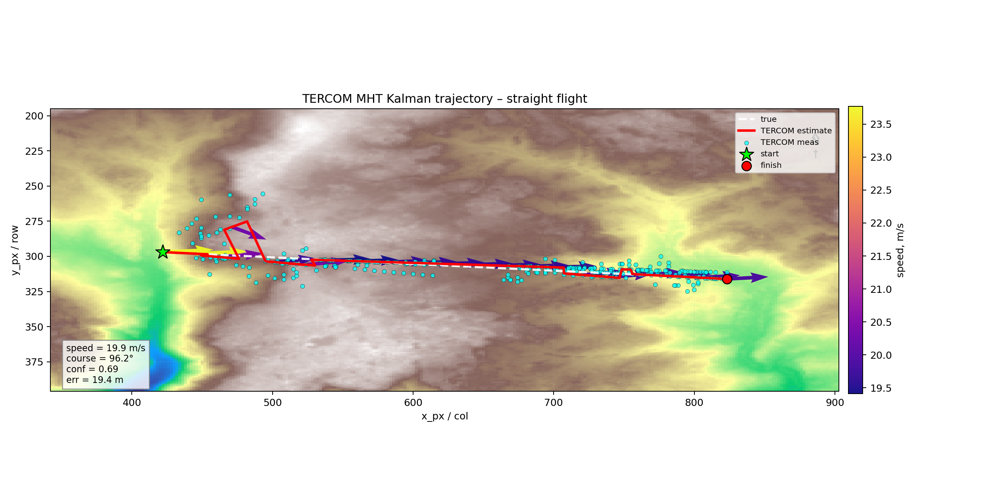
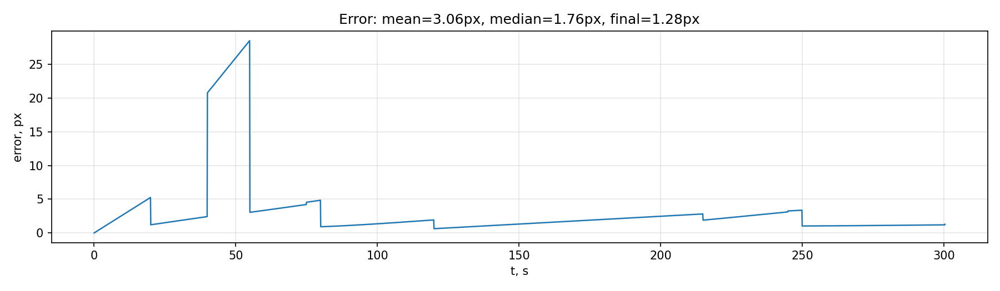
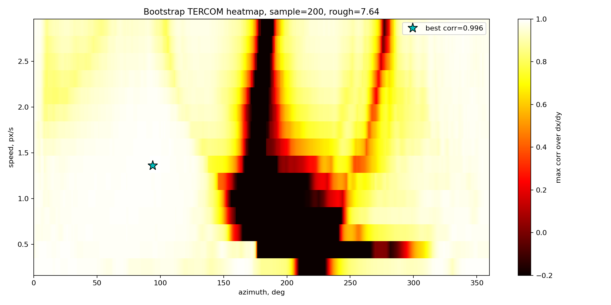

TERCOM + MHT Kalman MVP report
Summary
| samples | 3005 |
|---|
| locked samples | 2805 |
|---|
| final x,y | 823.27, 316.15 |
|---|
| final speed px/s | 1.337 |
|---|
| final azimuth deg | 93.0 |
|---|
| avg confidence | 0.675 |
|---|
| mean error px debug | 3.064 |
|---|
| final error px debug | 1.281 |
|---|
Trajectory

Error

Correlation heatmap

Notes
- GPS is used only as last known start point; after that nav status is TERCOM/Kalman or dead-reckoning.
- Azimuth step is configurable. For requirement demo use
--bootstrap-az-step-deg 1 --heatmap-az-step-deg 1.
- Onboard trade-off: larger azimuth/speed steps are faster; 1° mode is available for accuracy/demo.